You've downloaded the game 4,156 times since v0.19.0. I wanted to see where those downloads go, so the site has a Download stats page now: every installer since v0.19.0, by platform, by release and by card language, counted again twice a day. The home page's download panel gets a Steam script button with how to run it, every page on the site shares one top bar, and button labels stay drawn on the Windows desktop app.
from v0.19.0 to v0.46.0, on the day the page went up.
the biggest platform, ahead of Windows at 32%.
of installers since v0.39.0 have Spanish cards.
The site has a Download stats page. Pick Download stats in the top bar, or See more download metrics under the download buttons on the home page. It counts the installers on every GitHub release since v0.19.0.
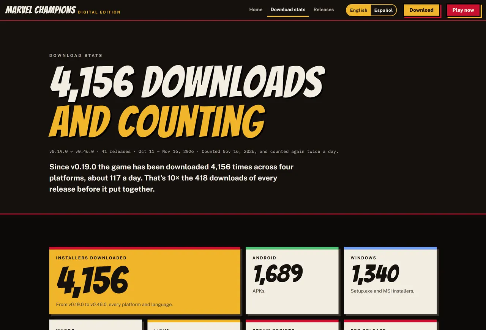
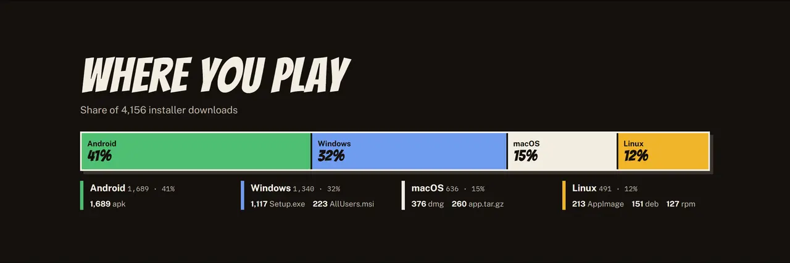
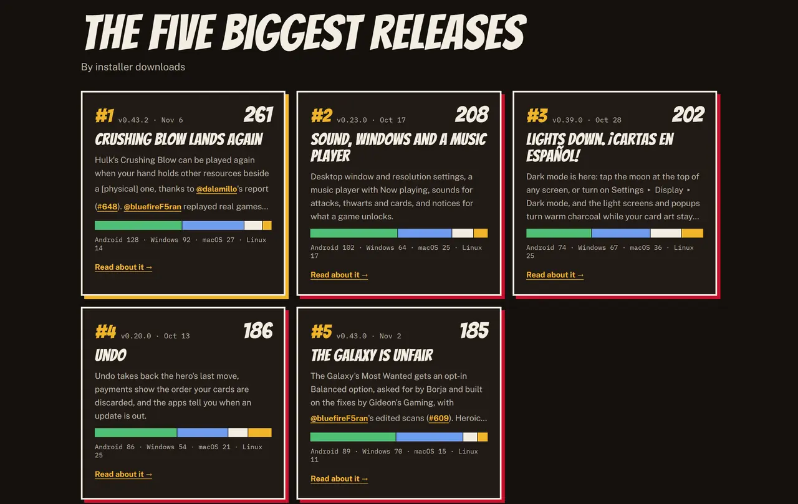
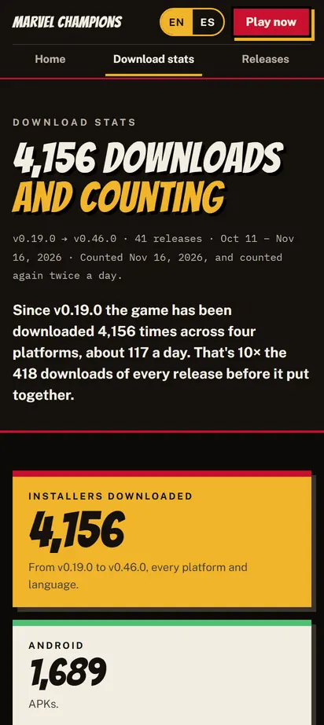
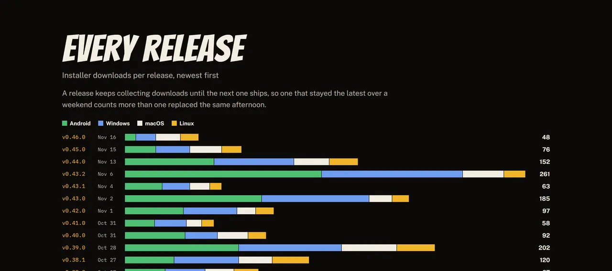
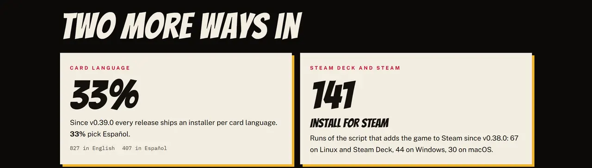
/stats/downloads.json.The home page's download panel has a Steam script button now, with the Steam logo, right beside the installer for your computer. Under it, a short note says what the script does and how to run it on that computer.
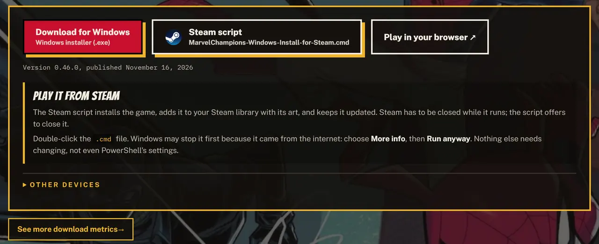
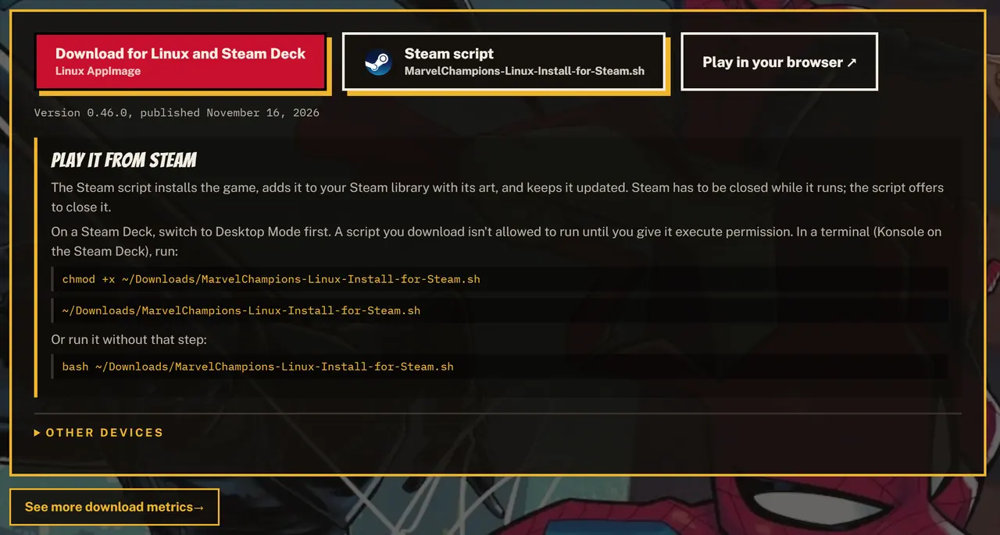
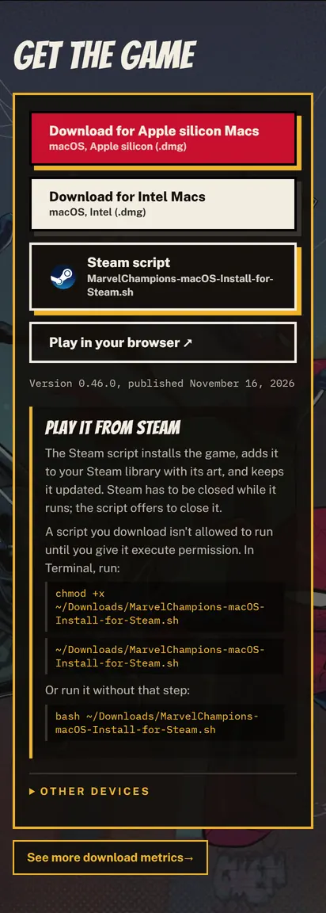
.cmd. If Windows stops it, choose More info, then
Run anyway. No PowerShell settings to change.
chmod +x, then run it, or run it with
bash and skip that step. Each command sits on its own line, so it copies whole.
Every page on the site has the same top bar now: Home, Download stats and Releases. It sits on the home page, the stats page, the release history and every release report, in English and in Spanish.
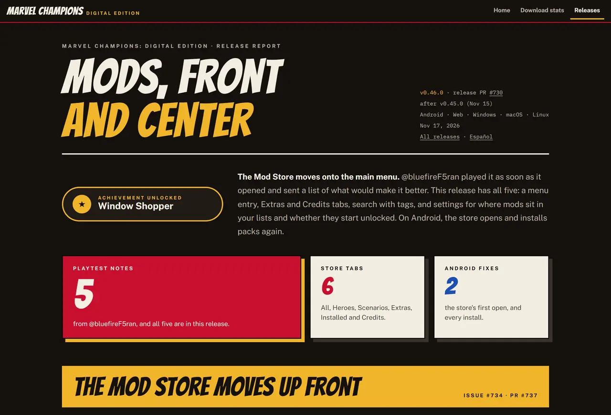
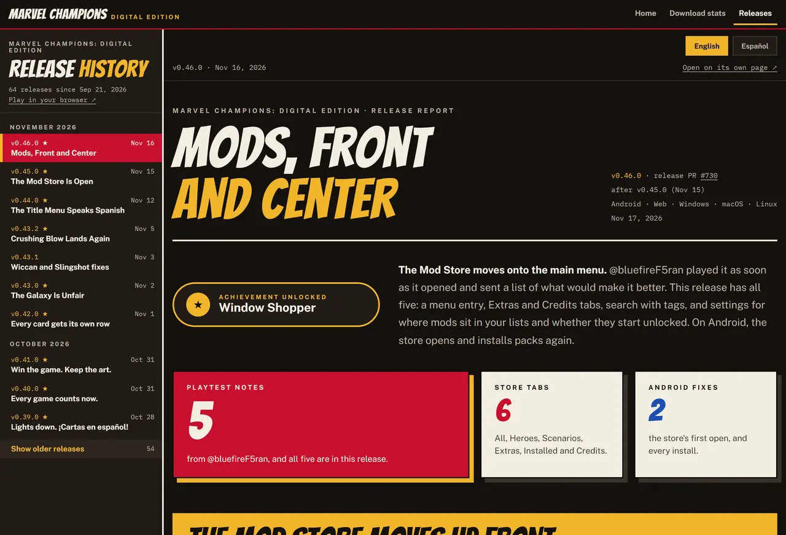
Button labels stay drawn on the desktop app. In v0.46.0 on Windows, coming back from the Mod Store or changing a setting could leave the buttons empty until the mouse went over them. Thank you, Stay Humble Eh, for the report on Discord.
The title menu's buttons, the Settings tabs and rows, the panel heading and the language chip all went blank. A label the mouse was over, or a selected one, still showed, because it is painted fresh in another color.
Since v0.45.0 the game keeps painted labels and reuses them, and on some graphics cards a kept label came back empty the second time it was drawn. Kept labels are now copied into a plain picture that draws the same every time, the way the Linux build already did.
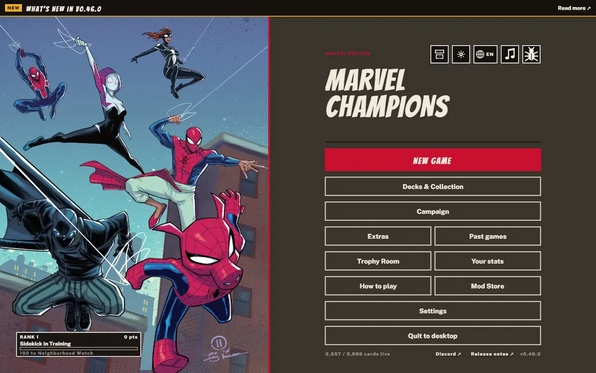
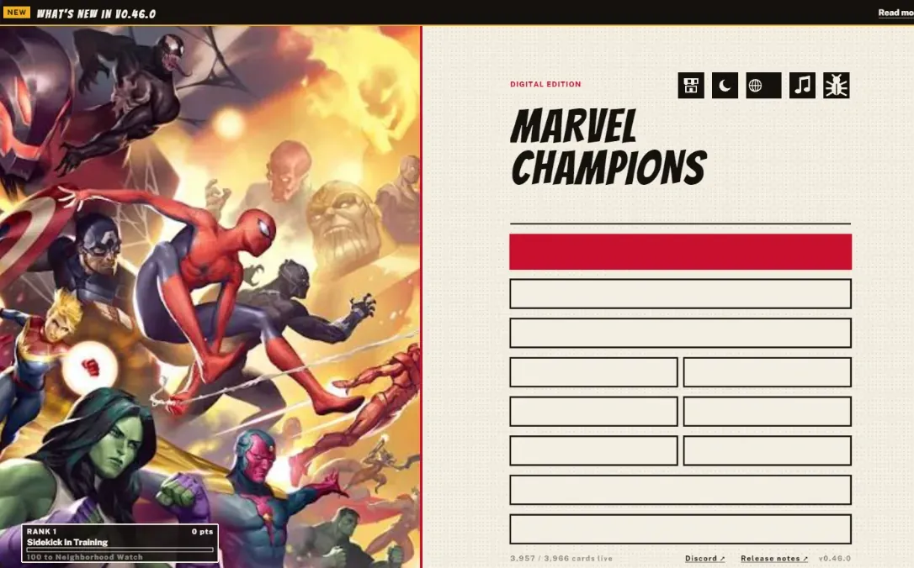
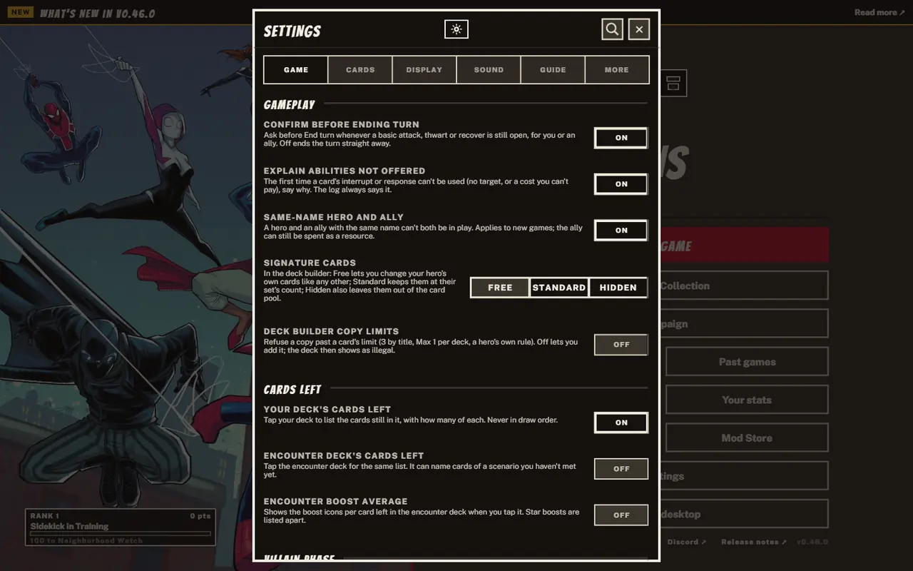
Every one of those downloads is someone sitting down to play. Keep the reports coming from Pause ▸ Report a problem, a GitHub issue or the community Discord.
4,156 installers since v0.19.0, plus everyone who plays in the browser, which no one counts.
Reported the blank button labels on the Windows desktop app on Discord, with screenshots, #744.
407 installers with Spanish cards since v0.39.0.
141 runs of Install for Steam since v0.38.0, 67 of them on Linux and Steam Deck.
merged into main.
across the site, its build and this report.
the stats page, the top bar and their tests.
most of them the home page's old links and styles, replaced by the bar.